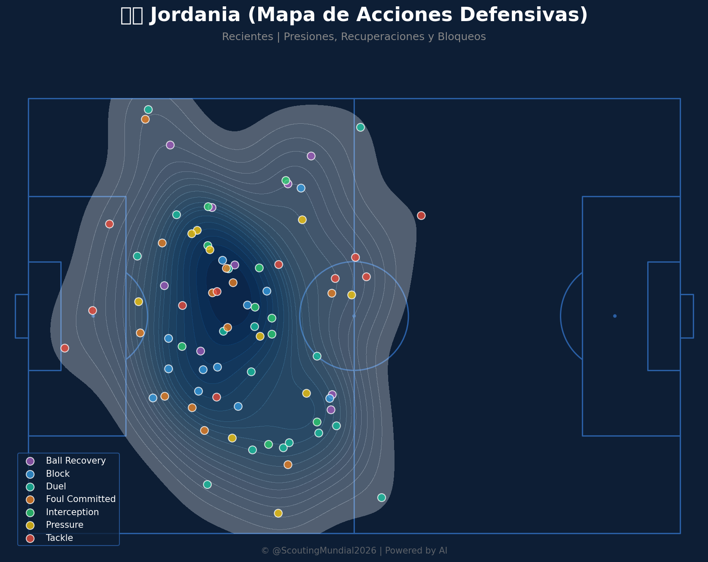
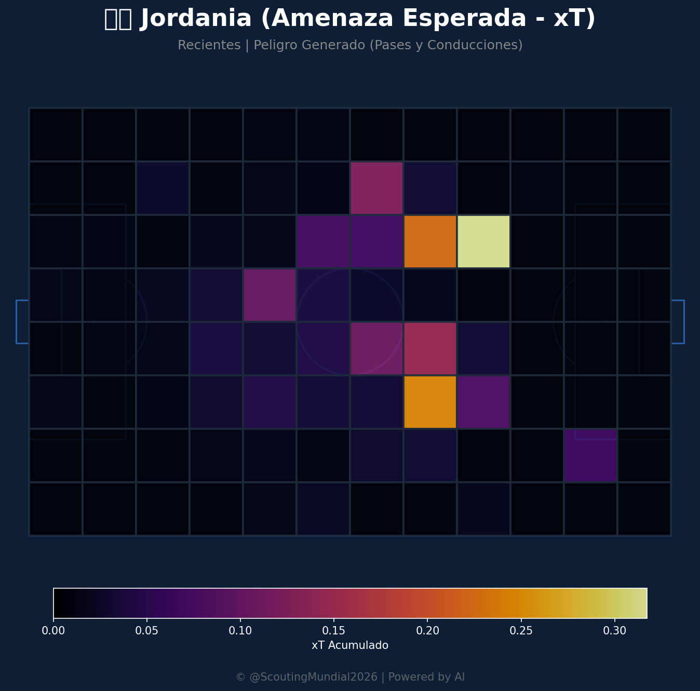
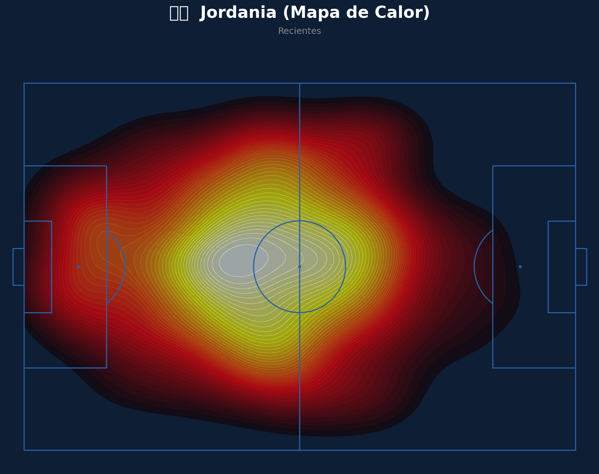
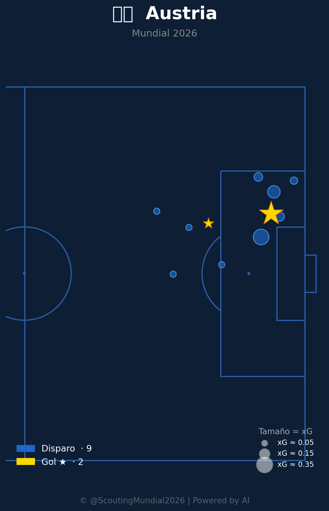
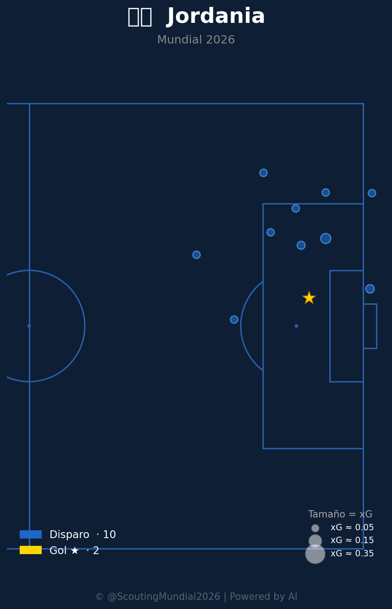
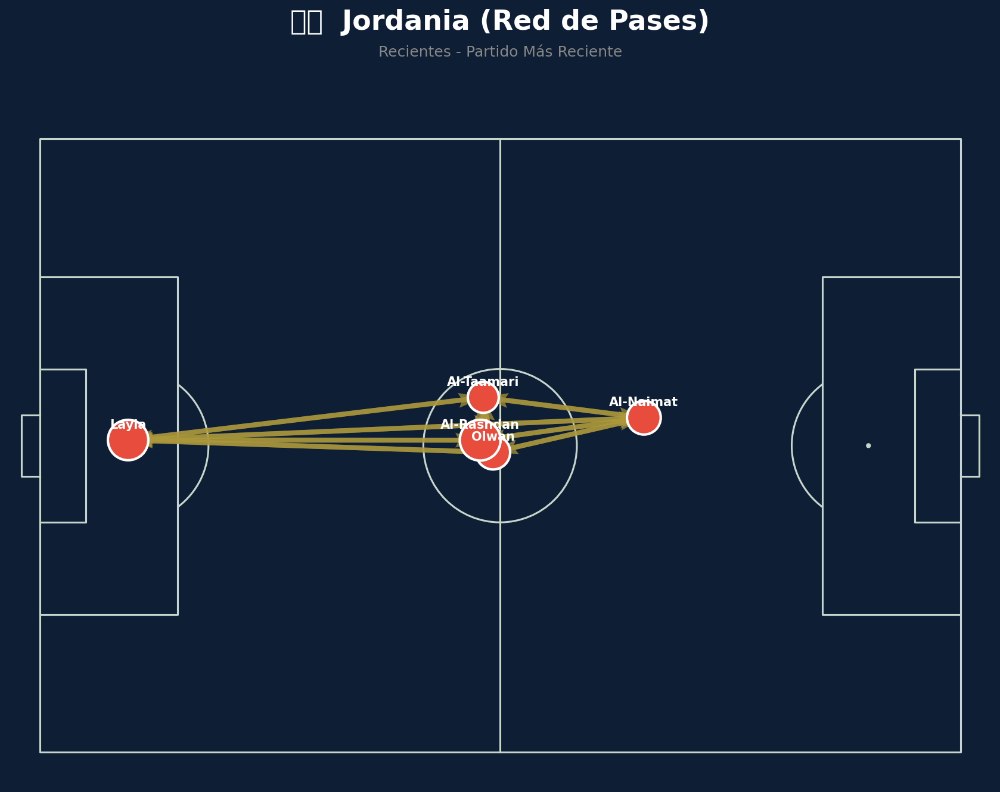
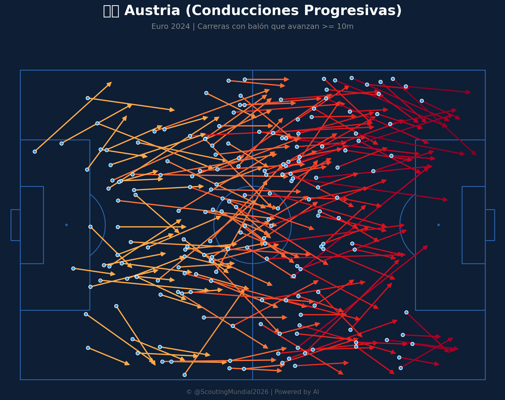
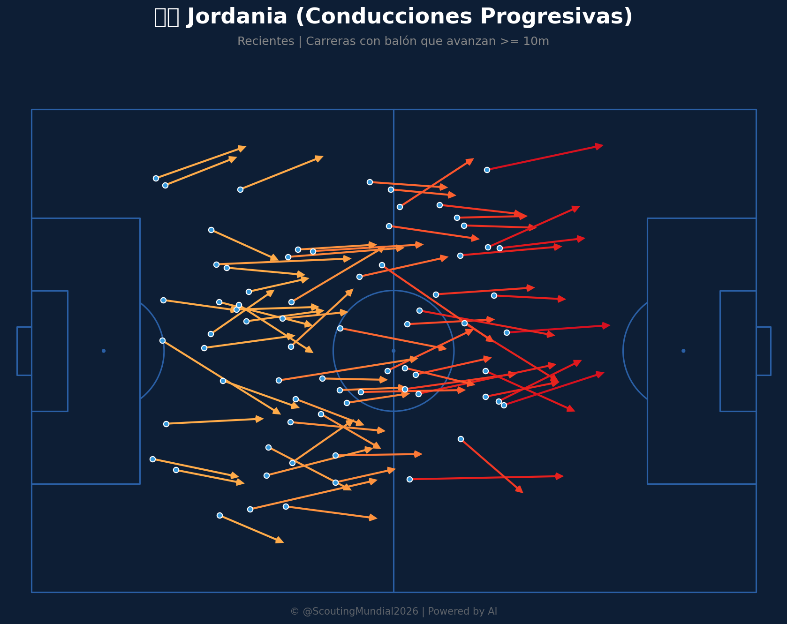
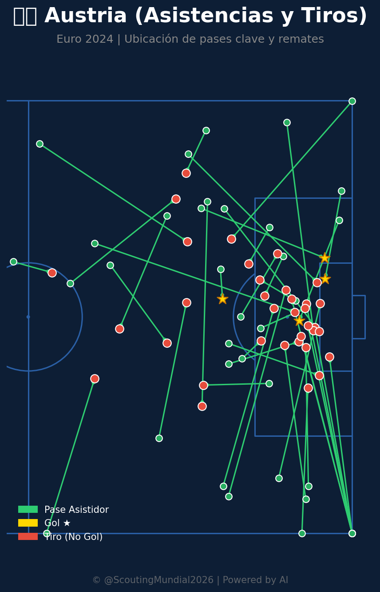
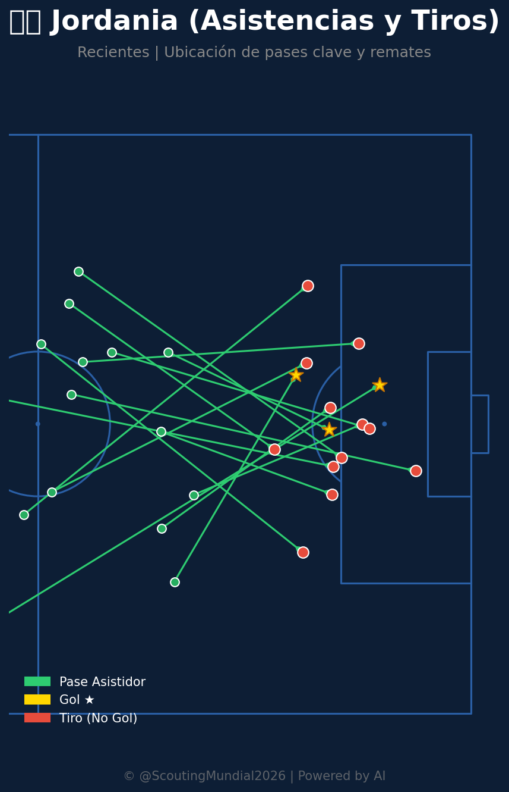

Grupo J
 Jordania
Jordania
Austria vs Jordania
📅 2026-06-16 · 🕒 22:00 (Local)
Austria

3 - 1
FINALIZADO
Jordania
📅 2026-06-16 · 🕒 22:00 (Local)
Jordania
Austria es claramente el favorito y debería ganar este encuentro. La diferencia en calidad y capacidad ofensiva es de consideración, aunque ambos equipos muestran deficiencias en eficiencia de finalización.
Este enfrentamiento presenta un claro favorito en la selección europea, cuya complejidad en la circulación y volumen ofensivo debería imponerse frente al compacto pero limitado planteamiento de Jordania.
1. Volumen y Eficiencia Ofensiva
Austria generó 44 disparos con 6 goles en el período analizado. Aunque su eficiencia no es excepcional (~13.6%), el volumen de intentos es considerablemente superior al de Jordania. El mapa de calor revela concentración en zonas de peligro alrededor del área, especialmente en los flancos y dentro del área pequeña, indicando que los austriacos saben dónde atacar.
2. Distribución y Creatividad
La red de pases de Austria es compleja y bien distribuida. Múltiples jugadores (Wimmer, Seiwald, Grillitsch, Baumgartner) actúan como creadores, lo que dificulta que un rival marque de forma personal a un único generador de juego. Esta diversidad de amenazas ofensivas es muy difícil de defender.
3. Amenaza Esperada (xT)
El mapa de xT de Austria muestra valores acumulados significativamente más altos, con concentración especialmente en el tercio derecho y áreas de transición. Esto indica que Austria no solo dispara más, sino que crea oportunidades de mejor calidad.
4. Presión Defensiva Efectiva
Las acciones defensivas de Austria están ampliamente distribuidas por todo el campo. La predominancia de presión (amarillo) en múltiples zonas sugiere un equipo que trabaja en transiciones cortas y recuperaciones frecuentes, ganando posesión en lugares estratégicos.
5. Progresiones de Juego
Las conducciones progresivas de Austria son abundantes y variadas, mostrando múltiples vías para avanzar. El equipo tiene opciones desde todas las posiciones, lo que le permite jugar con flexibilidad.
1. Eficiencia Insuficiente
Con 44 disparos y solo 6 goles, Austria deja mucho sobre la mesa. Esto sugiere que la definición no es su fortaleza, un problema crítico en partidos cerrados o contra equipos defensivamente sólidos.
2. Dependencia de la Posesión
El alto volumen de actividad ofensiva podría interpretarse como necesidad de dominio posicional para crear peligro. Si un rival logra bloquear el centro y los laterales, Austria podría experimentar dificultades.
1. Compactación Defensiva
Aunque Jordania genera menos volumen total, sus acciones defensivas están muy concentradas en la zona central. Esta compactación podría servir para bloquear el paso hacia el área y forzar a Austria a resolver desde larga distancia.
2. Simplicidad Táctica
La red de pases de Jordania, aunque limitada, es directa. Jugadores como Layla, Al-Tasmari y Al-Delemat actúan como ejes centrales. Esta simplicidad podría favorecer la consistencia defensiva.
1. Ofensiva Limitada
Con solo 32 disparos y 3 goles, Jordania tiene una tasa de conversión aún menor que Austria (~9.4%). El mapa de calor es disperso y desordenado, sin concentración clara en áreas de peligro. Esto refleja falta de estructura ofensiva.
2. Creatividad Muy Reducida
La red de pases muestra solo 4-5 jugadores clave. Esta concentración extrema es vulnerable: si Austria marca a Layla y Al-Delemat, Jordania pierde su capacidad creativa. Falta profundidad y alternativas.
3. Amenaza Esperada Mínima
El xT acumulado de Jordania es dramáticamente bajo (máximo 0.30), comparado con el 1.5+ de Austria. Esto indica que Jordania no solo dispara menos, sino que sus intentos son de calidad muy inferior.
4. Transiciones Ofensivas Débiles
Las conducciones progresivas de Jordania son limitadas, especialmente desde líneas defensivas. El equipo lucha para construir ataques desde la defensa hacia el ataque, dependiendo probablemente de recuperaciones en zona media.
5. Falta de Variedad Táctica
Jordania parece jugar de forma mucho más predecible y lineal, sin opciones alternativas cuando el plan principal falla.
| Métrica | Austria | Jordania | Ventaja |
|---------|---------|----------|---------|
| Disparos | 44 | 32 | Austria (+37%) |
| Goles | 6 | 3 | Austria (2x) |
| Eficiencia | 13.6% | 9.4% | Austria |
| Jugadores clave en pases | 8-10 | 4-5 | Austria |
| xT Acumulado | ~1.5 | ~0.3 | Austria (5x) |
| Conducciones progresivas | Abundantes | Limitadas | Austria |
| Distribución defensiva | Amplia | Concentrada | Austria |
En conclusión, Austria debería ganar con solvencia si mantiene su ritmo de juego y mejora ligeramente su puntería. Jordania solo tiene opciones de sorpresa jugando físicamente, compactado y buscando velocidad en transición. Sin embargo, la diferencia estadística es tan amplia que En definitiva, Austria es clara favorita. Se proyecta una victoria autoritaria de Austria por 2 - 0.
Austria venció 3-1 a Jordania en un partido donde los europeos impusieron su ritmo y presión alta. Jordania planteó un bloque replegado y físico, logrando descontar mediante una jugada de balón parado, pero el volumen de pases y la consistencia en el último tercio de Austria marcaron la diferencia para sellar el marcador a favor de los europeos.













